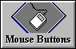
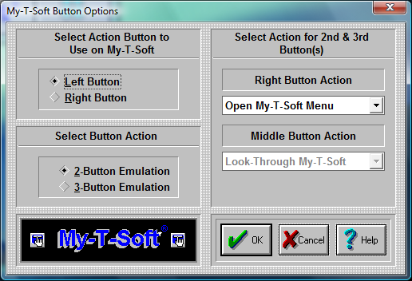

| My-T-Soft®: for Windows; Indestructible Keyboards and Indispensable Utilities; Version 1.80; User's Guide | ||
|---|---|---|
| Prev | Chapter 5. My-T-Soft Setup | Next |

Click on the Mouse Buttons Button

Important: The term Mouse is used generically for any pointing device that moves the cursor (mouse pointer) within Windows. For Pen and Touchscreen drivers, often only 1 button is available (Left Button): In all cases, the Left Button should be selected as the Action button.
My-T-Soft lets you define functions for all your Mouse buttons (2 or 3 button Mice). This can make you work more efficiently by eliminating frequently used tasks and key combinations.
Select Mouse Button to use on My-T-Soft Here you define which button on your Mouse is going to be used as a point-and-click button. This button will be the execution button.
Select Type of Mouse
If you have a two-button Mouse, click on 2-Button Mouse. If you have a three-button Mouse, click on 3-Button Mouse.
Note: If you have a three button Mouse, be sure that you are loading the correct driver. If you are loading a two-button Mouse driver with a three-button Mouse, you will not be able to use the middle button. Go to Windows Control Panel | Mouse to install a different Mouse driver.
Mouse Button Action Pull-down Boxes In order to assign a different function to the My-T-Soft Mouse buttons, do the following steps:
Click on the down-arrow of the 1st Pull-down box.
Use the scroll-bar to scroll up and down within the Pull-down box.
Select a function by clicking on its name.
Press the OK Button.
Repeat the steps 1-4 on the 2nd Pull-down box.
Press the OK Button.
If you do not want to change the current Mouse buttons setup, press the CANCEL button.
This functionality is only available while your Mouse pointer is over My-T-Soft.
Some of these actions are:
Ignore the button press (no reaction at all)
Move My-T-Soft around the screen (click and drag)
Look Thru My-T-Soft (while holding the button down you will be able to see the screen behind My-T-Soft)
Open the My-T-Soft Menu
Minimize My-T-Soft
Choose from a list of single or combination keystrokes, such as [Enter], [F1], [Alt-F4], etc.